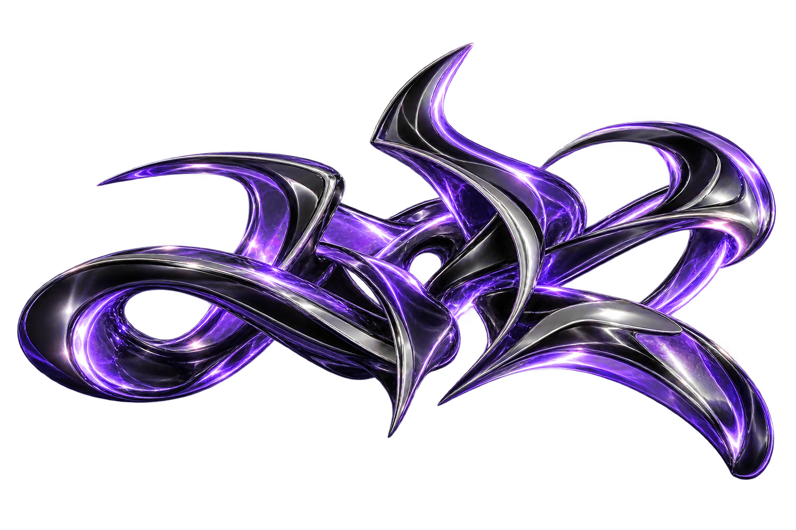

01 / Daten
Power BI
Daten übersichtlich aufbereiten und Zusammenhänge sichtbar machen.
Projektbeispiel ergänzen
Persönliches Portfolio · Power Platform
Einblicke in Projekte mit Power BI, Power Apps, Power Automate und Power Pages – zusammen mit meinem Weg und den Erfahrungen dahinter.
Daten · Anwendungen · Automatisierung

Werkzeuge in Aktion
Die Grundstruktur steht. Als Nächstes ergänzen wir deine konkreten Projekte, Bilder und Ergebnisse.
Daten übersichtlich aufbereiten und Zusammenhänge sichtbar machen.
Digitale Anwendungen für konkrete Abläufe und Bedürfnisse.
Wiederkehrende Schritte verbinden und Prozesse vereinfachen.
Portale gestalten, die Informationen einfach zugänglich machen.
Der Mensch hinter den Projekten
Hier erzählen wir deinen Weg: welche Stationen dich geprägt haben, welche Erfahrung du mitbringst und woran du als Nächstes arbeiten möchtest.
Der Bereich ist gestalterisch vorbereitet. Deine konkreten Stationen und Schwerpunkte ergänzen wir gemeinsam.
Rollen, Stationen und Zeiträume ergänzen.
Aufgaben, Verantwortungsbereiche und Ergebnisse beschreiben.
Arbeitsweise, Interessen und nächste Ziele sichtbar machen.
Kontakt
Deine gewünschten Kontaktwege, etwa LinkedIn oder E-Mail, ergänzen wir im nächsten Schritt.